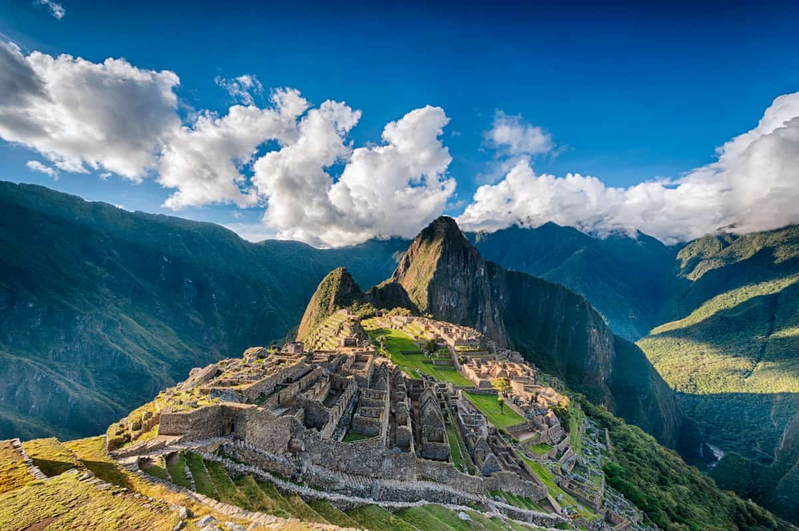
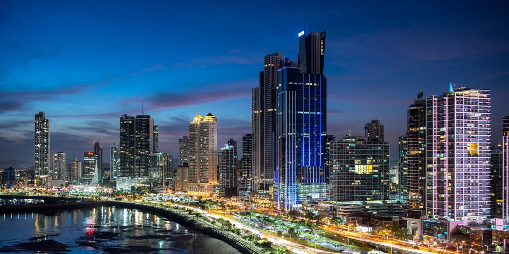

Viajar es más que trasladarse de un lugar a otro: es descubrir culturas, sabores y paisajes que transforman tu manera de ver la vida. Diseñamos experiencias únicas para que vivas cada destino de forma auténtica, segura y memorable. Desde escapadas románticas hasta aventuras exóticas, hacemos realidad el viaje que siempre soñaste.
Viajar es mucho más que desplazarse de un lugar a otro; es una oportunidad para descubrir nuevas culturas, ampliar la forma en que vemos el mundo y crear recuerdos que nos acompañarán toda la vida. En nuestra página web de viajes queremos inspirarte a soñar, planear y vivir experiencias únicas en destinos increíbles alrededor del mundo. Aquí encontrarás desde playas tranquilas y ciudades llenas de historia, hasta paisajes naturales sorprendentes y aventuras pensadas para quienes buscan emociones nuevas y diferentes.

Cada viaje cuenta una historia, y queremos que la tuya sea extraordinaria. Trabajamos con los mejores proveedores y destinos para ofrecerte paquetes personalizados, adaptados a tus gustos y presupuesto. Tú solo preocúpate por disfrutar, nosotros nos encargamos de cada detalle.
Viajar permite conocer nuevas culturas y aprender sobre otros lugares del mundo.
Un ejemplo científico es la fórmula del agua H2O que encontramos en los océanos y mares.
Algunos lugares están a más de 2000 m2 sobre el nivel del mar.
Las páginas web se crean usando código como <html> y <body>.
Colombia es un país ubicado en el norte de América del Sur y se caracteriza por su gran diversidad geográfica y cultural. En su territorio se encuentran montañas, selvas, llanuras, desiertos y costas tanto en el mar Caribe como en el océano Pacífico, lo que le permite tener una enorme variedad de climas y ecosistemas.
Además, Colombia es conocida por su producción de café, flores y frutas, así como por su música tradicional como la cumbia y el vallenato. Su población es muy diversa, resultado de la mezcla de pueblos indígenas, europeos y africanos.


Brasil es el país más grande de América del Sur y uno de los más extensos del mundo, tanto en territorio como en población. Se destaca por albergar la selva amazónica, considerada uno de los pulmones más importantes del planeta por su biodiversidad.
Brasil también es famoso por su alegría, reflejada en celebraciones como el carnaval, su música, el baile y el fútbol, que es una gran pasión nacional.


Panamá es un país vibrante que conecta América Central con América del Sur, reconocido mundialmente por su importancia histórica, cultural y económica. Gracias a su ubicación estratégica, Panamá se ha convertido en un punto clave para el comercio internacional y el turismo.
Este país destaca por su diversidad cultural, resultado de la mezcla de influencias indígenas, africanas, europeas y caribeñas.


Viajar es una experiencia que comienza con un SUEÑO y se convierte en realidad con una buena planificación.
VUELOS AQUI